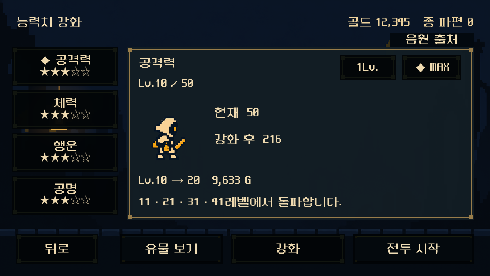
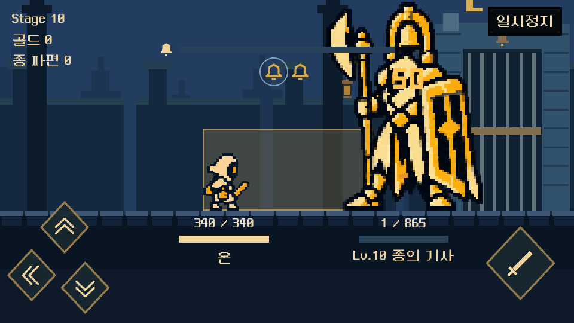
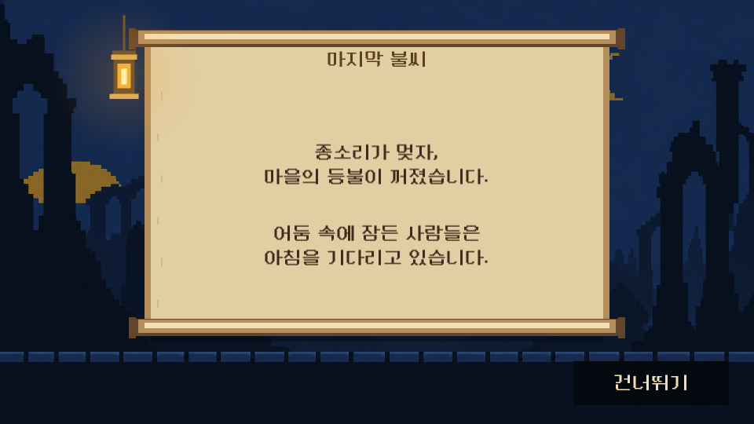
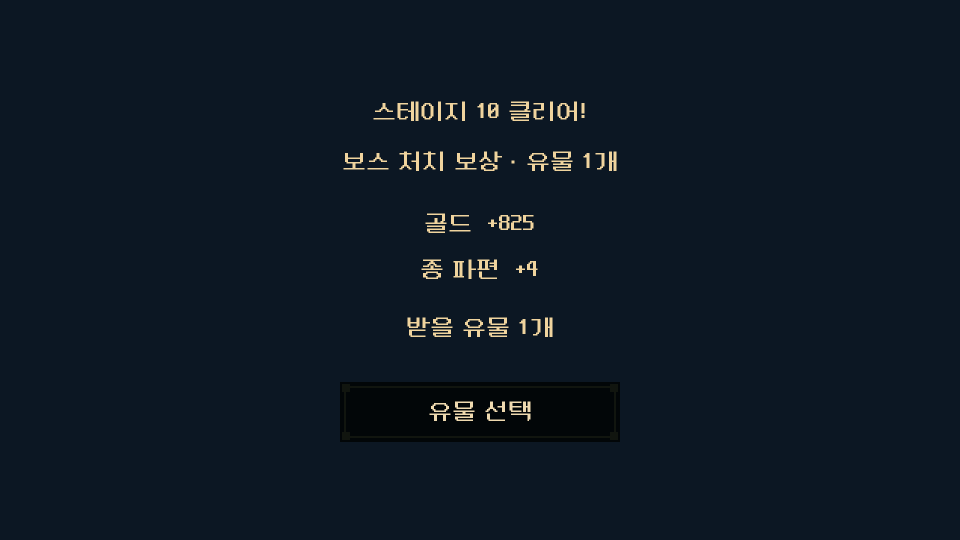
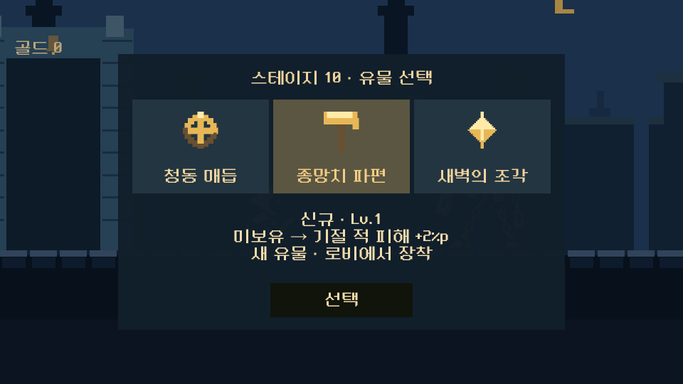
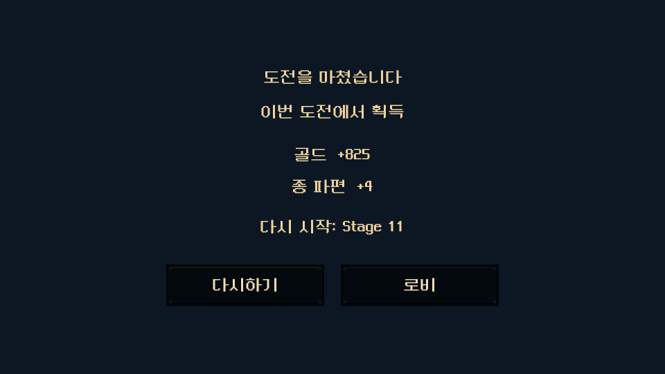
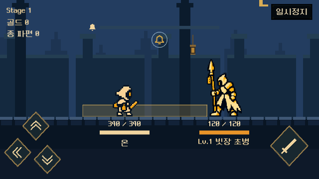
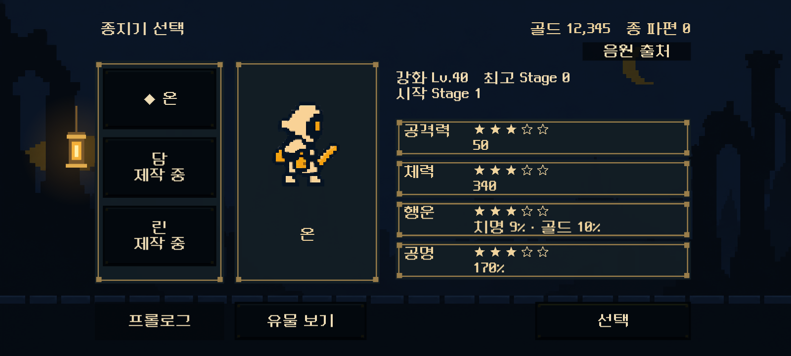

Last Bell · v8.1 게임 적용
2026-10-23 · Unity 6000.3.15f1 · Windows 0.8.1
아래는 HTML 모형이 아닌 Windows 실행 파일에서 촬영한 화면입니다.
Windows 실행 파일Windows 전체 압축 파일검증 기록적용 사양
NeoDunggeunmo Pro · 공통24px(960×540 기준), 선택/강화 화면 분리, 어두운 성문 배경과 황동 테두리, 레퍼런스 위치의 세 방향 회피, 하단 HP·이름·레벨을 반영했습니다. 기존 저장의 재화·강화·유물·체크포인트를 유지합니다.
캐릭터 선택 능력치 강화
능력치 강화 MAX 강화 견적
MAX 강화 견적
전투 배치 · 3방향 조작보스 하단 HP
자동 프롤로그 · 건너뛰기
도전 종료 후 클리어 안내
유물 미리 선택 · 확정
다시하기 · 로비
640×360 Windows 화면 검증 · 실물 모바일 기기 검증은 별도
1600×720 · 와이드 화면
글꼴 원본: Neo둥근모 프로젝트. 수정하지 않은 공식 TTF와 SIL OFL1.1 고지를 함께 배포합니다.